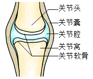

2023年北京中考生物 第15题 解析
15. 下图为关节结构示意图，关于关节的结构和功能对应有误的是（ ）

A. 关节囊——使关节更加牢固B. 关节腔——内有减少摩擦的滑液
C. 关节头和关节窝——适于肌肉附着D. 关节软骨——起到缓冲作用
【答案】C
【解析】
【分析】关节是由关节面、关节囊和关节腔三部分组成。关节面包括关节头和关节窝。关节面上覆盖一层表面光滑的关节软骨，可减少运动时两骨间关节面的摩擦和缓冲运动时的震动；关节腔内有少量滑液，滑液有润滑关节软骨的作用，可以减少骨与骨之间的摩擦，使关节灵活。关节囊由结缔组织构成，包绕着整个关节，把相邻的两骨牢固地联系起来，囊壁的内表面能分泌滑液，在关节囊及囊里面和外面还有很多韧带，使关节更加牢固。
【详解】A．关节囊由结缔组织构成，包绕着整个关节，把相邻的两骨牢固地联系起来，使关节更加牢固，故A正确。
B．关节腔内有少量滑液，滑液有润滑关节软骨的作用，可以减少骨与骨之间的摩擦，使关节灵活，故B正确。
C．关节面包括关节头和关节窝。关节面上覆盖一层表面光滑 关节软骨，故C错误。
关节软骨，故C错误。
D．关节面上覆盖一层表面光滑的关节软骨，可减少运动时两骨间关节面的摩擦和缓冲运动时的震动，故D正确。
故选C。